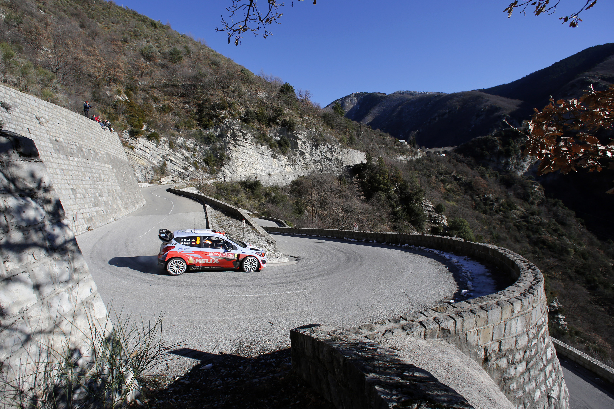
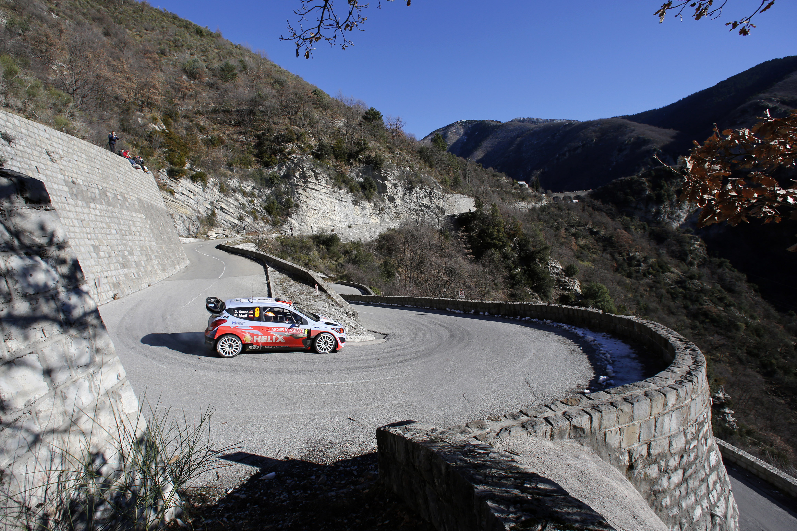
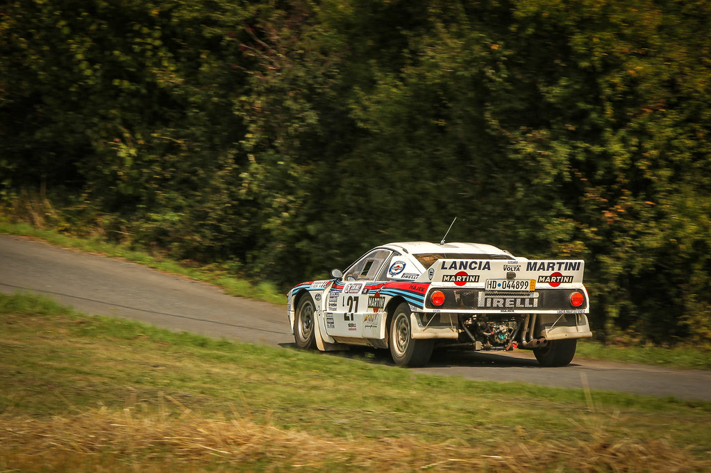

This is my Home Page
The motorsport that is Rally is an exhilarating and dynamic form of racing that involves specially designed vehicles competing against each other on diverse terrains, including gravel roads, dirt tracks, snow-covered landscapes, and sometimes even asphalt. This thrilling and challenging racing discipline has a rich history and a global following, with various championships and events held around the world.
Key elements of motorsport rally include:


Diverse Terrains:
Unlike traditional circuit racing, rally events take place on a variety of surfaces, testing the driver's skill and adaptability. From the winding mountain roads to the unpredictable off-road tracks, each rally presents a unique set of challenges.Co-Driver Dynamics:
In most rally formats, each competing vehicle is manned by a driver and a co-driver. The co-driver plays a crucial role by navigating the course, communicating upcoming turns, hazards, and speed changes to the driver. This partnership is essential for success in rallying, as it requires seamless communication and coordination between the two team members.Special Stages:
Rally events are divided into special stages, where competitors race against the clock to complete a specific section of the course. These stages are often short, intense sprints that demand precision and speed. The total time taken to complete all stages determines the overall winner.Service Parks:
Between special stages, competitors have designated service parks where their teams can perform maintenance on the vehicles. This adds a strategic element to the sport, as teams must balance the need for repairs with the time constraints of the competition.WRC (World Rally Championship):
The pinnacle of rally racing is the World Rally Championship, a prestigious series that attracts the best drivers and teams from around the globe. Iconic events such as the Monte Carlo Rally, Rally Finland, and the Rallye Deutschland are part of the WRC calendar.
Iconic Vehicles:
Rally cars are specially designed for the challenging conditions they will face. These high-performance machines are equipped with advanced suspension systems, four-wheel drive, and powerful engines. Popular manufacturers such as Ford, Subaru, and Toyota often compete in rallying, adding an extra layer of brand rivalry to the sport.